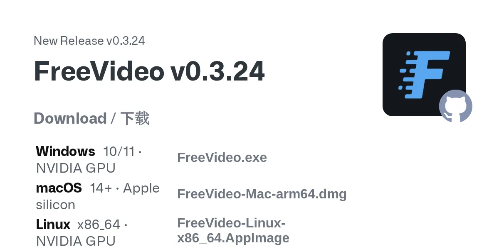

影片＋音訊生成1 則更新
MiniMax H3
本地方案持續修：FreeVideo v0.3.24；本體權重無新版
- 2026-10-11
FreeVideo v0.3.24：背景編譯、8GB RTX 30 第二遍更快

圖片來源：GitHub · FlashML-org/FreeVideo FlashML-org 的 FreeVideo（ComfyUI 外掛本機跑 MiniMax H3 文／圖生影片＋音訊）在 10/11 標註 v0.3.24。重點：更新／安裝／修復或換驅動後改在空閒時背景編譯（約 2–3 分鐘），之後第一次生成不必再等；編譯快取改存 FreeVideo 目錄，清系統暫存不再拖慢下一支片。記憶體較小的 Windows、以及 8GB RTX 30 系列在兩遍生成的第二遍更省讀盤、更快。開啟提示詞增強時，改寫可早 3–4 秒開始（背景預熱約 0.7 GiB RAM、不佔顯存）。Repair 會補回被改動的 ComfyUI 套件與不符測試版的模型檔；離線安裝也可用啟動器更新引擎。Windows／macOS／Linux 安裝包與夸克離線包一併更新。程式碼仍 Apache-2.0，權重受 H3 Community License 約束。